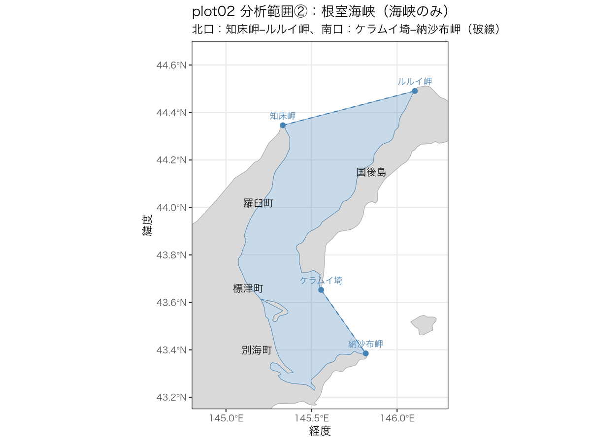

01 ／ 根室海峡 ／ 2026–
根室海峡のロシアのトロール漁船を、公開データで「見える化」する
論文投稿の準備中
- 問い
- 北海道と国後島の間の根室海峡では、スケトウダラを日本とロシアが一緒に利用しています。ところが日本の資源評価では、ロシア側の漁獲量や操業の量は「不明」とされています。公開されている衛星データから、ロシア船の操業を数字で示せないかを調べています。
- データ
- Global Fishing Watch の AIS データ（2018–2025年）、衛星レーダー画像（Sentinel-1 SAR）による船の検出、地元の目視記録
- 工夫した点
- 「根室海峡」の範囲を、海上保安庁の定義に合わせて4つの岬の位置から自分で作図しました（下の図）。
- 操業が増えたように見えるのが、AISの受信状況が良くなっただけではないかを確かめました。
- AISを切っている船がいないかを、衛星レーダーや地元の記録と照らし合わせて検証しました。
- 主な船の1日ごとの航跡を追い、海峡の外ではどこで操業しているかも調べました。

上の範囲を作るコードの一部（R・sf）
# 国後島の中心線：0.02度ごとに、島の東西の端の中点をとる kuna_lats <- seq(cape_keramui[["Y"]] + 0.01, cape_ruruy[["Y"]], by = 0.02) kuna_mid <- map_dbl(kuna_lats, function(y) { line <- st_sfc(st_linestring(rbind(c(xmin, y), c(xmax, y))), crs = 4326) x <- st_intersection(line, kunashiri) if (length(x) == 0) NA_real_ else mean(st_bbox(x)[c("xmin", "xmax")]) }) # 北口 → 国後島の中心線 → 南口 → 北海道の内陸 で囲み、陸地を除く strait_pieces <- st_sfc(st_polygon(list(strait_outline)), crs = 4326) |> st_make_valid() |> st_difference(land_sf) |> st_cast("POLYGON") # 海峡の中央（145.4°E, 43.9°N）を含む海域だけを残す center <- st_sfc(st_point(c(145.4, 43.9)), crs = 4326) area_strait <- strait_pieces[st_intersects(strait_pieces, center, sparse = FALSE)[, 1]]
結果の数字や図は、論文を投稿する前のためここには載せていません。面接などでは、分析レポートをお見せしながら説明できます。